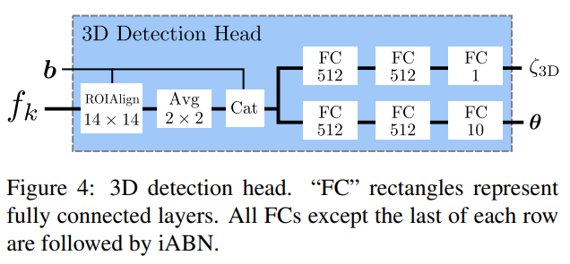
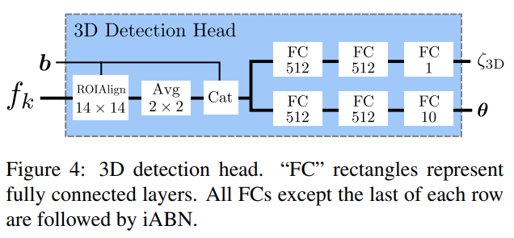
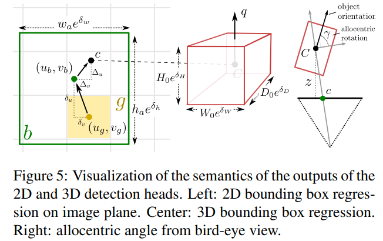

Disentangling Monocular 3D Object Detection
这篇论文目前在nuScene以及Kitti上实现了单目视觉三维检测的SOTA的性能。
使用Two Stage的检测方式，与M3D-RPN类似，利用了多尺度特征，增加了多个特殊设计的Loss function
整体结构
网络分为backbone, 2D head, 3d head三个部分，结构分别为
 

直觉上来说，就是使用Res34以及feature pyramid network(FPN)提取多尺度特征，输出多个feature map，每一个feature map输出2D detection Output.对每一个Proposal，使用ROIAlign层将对应框resize为14*14，提取出特征后与2D输出连接再输入到全连接层，最终输出3D output
其输出定义: 
注意旋转输出的是四元数
损失函数
2D Loss
- Focal loss 源自与这篇文章
- Loss based on sIoU
sIoU的计算公式为：
实际上有以下五种情况，sIoU会在[-1, 1]之间，

3D Loss
-
Regression 网络输出10个参数x,y,z,w,h,l,quarternion,使用lifting transformation 将这组参数转换为目标参数8个，对8个参数进行回归
-
Classification Focal loss
lifting transform
实际上就是将预测点提升为8个角点 令为预测的中心点深度、在图中投影的坐标，车辆三维以及四元数。K为相机内参 令 这个是中心点是实际坐标 lifting transform 为
Disentangling 2D and 3D Detection Losses
直觉来说，二维Regression loss与三维Regression loss,直接叠加的好处是两者不会相互影响，但是它们会产生不平衡，影响优化的过程
比如对于本文的三维回归来说，原始参数分为四组，也就是深度、相机坐标、三维以及角度，回归时需要计算的参数是八个角点的坐标，其中需要一个转换。
在计算loss时，分成四组。其中第组计算loss时，第组参数用预测值，其余用ground_truth，如此每一组都会分开优化。
具体直觉看原文